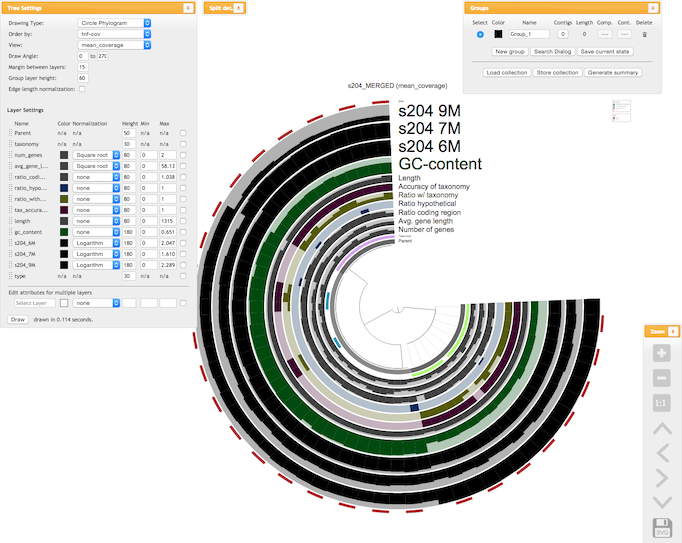

Computational Lab Exercises¶
Install Tools¶
You will need to install the following tools for today’s exercises. Use conda to install the following tools
fastANI
Roary
Anvi’o
Use RStudio to install the following tools
genoPlotR (you will first need to install base R and Rstudio tools on your laptop)
Run fastANI to compare genomes¶
FastANI is a tool to compare how similar one organism is to the other at the genomic level. Back in the day when scientists need to describe discovery of a new species, they would need to submit genomic DNA isolated from a pure culture to a lab that has genomic DNA of a known bacterial/archaeal strain and perform DNA-DNA hybridization experiments. Based on the percentages of hybridization, one can determine whether an organism of interest could be a new/novel species or not. This process is labor-intensive and time-consuming and can take weeks to months to get results.
However, thanks to genomic revolution brought about by next-generation sequencing technologies, we now have vast numbers of genomic sequences of microbes and rapidly compare their genomes for similarties. This made it possible to perform in silico DNA-DNA hybridization or to use an alternative measure of relatedness using purely DNA sequences. One measure is known as the “Average Nucleotide Identity” or ANI for short.
We now have tools that can perform genome-to-genome comparisons to calculate ANI between related organisms and tell you quickly how related one organism is to another at the genomic level. Some of the tools that are available are, PyANI (https://github.com/widdowquinn/pyani) and FastANI (https://github.com/ParBLiSS/FastANI). PyANI uses pairwise alignment tools such as BLAST or MUMmer to compare genomes and FastANI uses alignment-free method known as “Mashmap” algorithm, which is essentially a
k-mer-based tool. Today, you will install and run fastANI to perform genome comparisons between some of the metagenomic bins you have constructed from several weeks ago. You will also download a few reference genomes available on NCBI website to perform comparisons.
Install fastANI¶
You may run into problems installing fastANI on your laptop computer. I have tested installing it on Cerberus and it works fine. Follow the instructions below to install fastANI on Cerberus.
conda create -n fastani
conda activate fastani
conda install fastani=1.33
Use fastANI to compare bins produced by Metabat2¶
First, navigate into the folder where you last obtained metagenomic bins from a metaSPAdes run. This folder contains all the bins with .fa extension. Then create a list containing the names of these .fa files.
ls *.fa > fa.list
Then run fastANI by typing:
fastANI --ql fa.list --rl fa.list -o fastANI_results.txt
This will perform all-vs-all comparison of all the bins you have obtained from the metaSPAdes assembly/binning. This will produce a file named fastANI_results.txt file. If you type cat fastANI_results.txt, this will print all the contents to screen and you can see what’s in it. It will contain 5 columns of the following: query genome name, reference genome name, ANI value, count of bidirectional fragment mappings, and total query fragments.
So if the first and second columns show the same name, that means you are looking at self matches. This means the third column will most likely be 100 or something close. In order to filter out self matches, you can type like this in the terminal:
awk '{if($1 != $2) print $0}' fastANI_results.txt
This will print only rows that contain non-self matches, i.e., between different genomic bins. The goal is to see if you have any bins that might be related based on ANI values. Currently, the threshold to consider if two organisms belong to the same species is if the ANI is above 96% or higher. Based on the ANI values you have obtained, can you verify if these bins may be related? Also look at your GTDB-Tk results from a few weeks ago to see if you can corroborate these results. Your GTDB-Tk matches will reveal if these bins are related at, let’s say, Phylum or Class or Order levels, etc.
Use fastANI to compare close relatives of known bacteria¶
Now, we will download a few E. coli and Salmonella genomes available from NCBI and see how related they are to each other.
First download these 5 E. coli genomes:
Save these ftp links in a text file named ecoli.txt.
Then download 5 Salmonella genomes:
Save these ftp links in a text file name salmon.txt.
After downloading them, make sure you are putting them in the same folder. For example, in the exercises folder, create something like comparisons or something like that. Navigate into the folder and unzip the files by typing gunzip *.gz. After downloading and creating the text files as shown above, type the following commands.
cut -d '/' -f 11 ecoli.txt | sed 's/.gz//g' > ecoli.list
cut -d '/' -f 11 salmon.txt | sed 's/.gz//g' > salmon.list
cat ecoli.list salmon.list > all.list
Now you are ready to run fastANI tool. First, run an all-vs-all search containing all E. coli and Salmonella genomes.
fastANI --ql all.list --rl all.list -o all_vs_all_fastANI.txt
Inspect the all_vs_all_fastANI.txt file and see what you can conclude from this. Try to run the same awk command to filter out self matches. It may be difficult to see what’s going on because of the number of similar organisms and varying levels of sequence similarities between their genomes. Now, we will run just on the E. coli genomes.
fastANI --ql ecoli.list --rl ecoli.list -o E2E_fastANI.txt
What can you tell from the results? Use the awk command to filter out self matches.
We now run fastANI on just the Salmonella genomes.
fastANI --ql salmon.list --rl salmon.list -o S2S_fastANI.txt
What can you tell from the results? Use the awk command to filter out self matches.
Now run fastANI between E. coli and Salmonella genomes.
fastANI --ql ecoli.list --rl salmon.list -o ecoli_vs_salmon_fastANI.txt
Inspect the results from E. coli vs Salmonella fastANI results and compare them to the fastANI searches between same species. What can you conclude from these searches?
Roary to compare pan-genomic contents¶
Roary is a tool to perform various analyses to compare genomes of closely related organisms. It is a tool that can determine pan-genomic contents, i.e., genes or gene families shared across multiple genomes. You can read about their paper here: http://bioinformatics.oxfordjournals.org/content/31/22/3691 and their Github page is located here: https://sanger-pathogens.github.io/Roary/
We will try using roary with a few examples given on their Github page and also tutorials on this page:
https://github.com/microgenomics/tutorials/blob/master/pangenome.md
Run Prokka first!¶
First, let’s go back into the folder where you have been running fastANI tool. In order to be able to run roary, you need to first annotate your genomes with prokka. Pleae revisit instructions on how to run prokka if you forgot how. We have compared 10 genomes (5 from E. coli and 5 from Salmonella) today. We will redo annotation using prokka on these genomes. You can either run prokka on cerberus or on your laptop. Remember to make sure you install prokka
correctly as it requires lots of dependencies and can be difficult to install. The correct way to install it is like this:
conda install -c conda-forge -c bioconda -c defaults prokka
If you are running prokka on your laptop, then follow the for-loop example I have shown below. On cerberus, make sure to us an sbatch script to submit jobs!
## create a folder first
mkdir all_prokka
for i in `ls *.fna | sed 's/.fna//g'`;do
prokka --kingdom Bacteria \
--locustag ${i} --prefix ${i} \
--increment 1 --evalue 0.001 \
--outdir all_prokka/${i} --cpus 8 \
${i}.fna
done
This will run prokka on all the genomes and you will have subfolders of the annotations in the all_prokka folder. After this, create a folder named gffs then copy all the files in subfolders of all_prokka with extension .gff into gffs folder.
Then go into the gffs folder, then type the following commands from roary tool:
roary -e -n -p 4 *.gff
query_pan_genome -a union *.gff
query_pan_genome -a complement *.gff
This will produce a bunch of files after several minutes It will take a while but not hours. Note that you are comparing pan-genomes of genes shared between both E. coli and Salmonella genomes. If you want to limit this analysis to just E. coli or Salmonella, then you need to create different folders and copy only the .gff files of respective genomes.
Look at the summary_statistics.txt file and see what it says. It will tell you the number of genes shared between the genomes and other things.
After this, run this command to create a phylogenetic tree using core genomes found between all these organisms.
FastTree -fastest core_gene_alignment.aln > fast.tree
FastTree should have been installed when you installed roary as it is a dependency and as the name suggests, it is a very fast tool to construct approximate maximum likelihood trees. However, because we are running this tool on the concatenation of multiple core genes found in these 10 genomes, it will take a while to complete. If you want to speed things up, you may wish to run this tool on cerberus using an sbatch script. cerberus has higher memory capacity than your laptop and
may speed up the analysis. You can visualize this tree using FigTree to see how related the organisms are to each other based on core-gene alignments.
Anvi’o¶
Anvi’o is a really handy tool for comparative genomic and pangenomic comparisons of microbial genomes. It is a tool actively developed and maintained by a community of researchers, mostly led by A. Murat Eren (aka Meren) (who was previously based at University of Chicago but now moved to Germany). It is able to perform many of the computational analyses you have already learned to use up to now, plus many more! Here’s the website for you to read more about it. https://anvio.org/
You can use Anvi’o to analyze individual or a collection of genomes that are from closely related organisms. It also allows you to work with the data interactively through a web browser. The range of capabilities it has is quite astounding and once you have an assembled genome, it can pretty much too most basic needs of a microbiologist or a microbial ecologist. Here’s the summary of what it is from the developers:
Anvi’o is a comprehensive platform that brings together many aspects of today’s cutting-edge computational strategies of data-enabled microbiology, including genomics, metagenomics, metatranscriptomics, pangenomics, metapangenomics, phylogenomics, and microbial population genetics in an integrated and easy-to-use fashion through extensive interactive visualization capabilities.
Today, you will learn to install and use Anvi’o to do basic pangenomic comparisons.
Anvi’o installation¶
You should install Anvi’o on your laptop first. Anvi’o has interactive features and it is best run on your local computer rather than a remote computer for interactive data exploration. Follow the instructions from the Anvi’o website on how to install the tool.
Some important steps are highlighted below for quick reference.
## update conda
conda update conda
## create a virtual environment for Anvi'o
conda create -y --name anvio-7.1 python=3.6
## activate the environment
conda activate anvio-7.1
## install dependencies
conda install -y -c bioconda "sqlite >=3.31.1"
conda install -y -c bioconda prodigal
conda install -y -c bioconda mcl
conda install -y -c bioconda muscle
conda install -y -c bioconda hmmer
conda install -y -c bioconda diamond
conda install -y -c bioconda blast
conda install -y -c bioconda megahit
conda install -y -c bioconda spades
conda install -y -c bioconda bowtie2 tbb=2019.8
conda install -y -c bioconda bwa
conda install -y -c bioconda samtools=1.9
conda install -y -c bioconda centrifuge
conda install -y -c bioconda trimal
conda install -y -c bioconda iqtree
conda install -y -c bioconda trnascan-se
conda install -y -c bioconda r-base
conda install -y -c bioconda r-stringi
conda install -y -c bioconda r-tidyverse
conda install -y -c bioconda r-magrittr
conda install -y -c bioconda r-optparse
conda install -y -c bioconda bioconductor-qvalue
conda install -y -c bioconda fasttree
## this tool may or may not install.. it's ok if it doesn't
conda install -y -c bioconda fastani
## download and install Anvi'o
### download latest Anvi'o package (do this somewhere in a folder where you can keep this package, like "tools")
curl -L https://github.com/merenlab/anvio/releases/download/v7.1/anvio-7.1.tar.gz \
--output anvio-7.1.tar.gz
###
pip install anvio-7.1.tar.gz
Hopefully, this will be it and you’re good to start using Anvi’o. But first before you start using it, you need to make sure it is installed and working correctly as it should. To do that, you will have to type this command:
anvi-self-test --suite mini
At the end of this self test, you should see something like this below:
If you see something like this on your default browser, then Anvi’o is ready to go!
Pangenomic comparison example¶
Today, you will try to follow an example of a pangenomic comparison published on Anvi’o website. The tutorial and steps involved in each step are documented in great details on Anvi’o website so I will just provide the link to this tutorial rather than reproduce the instructions on this website. Please go through the instructions here: